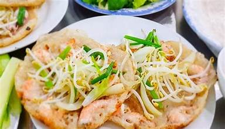
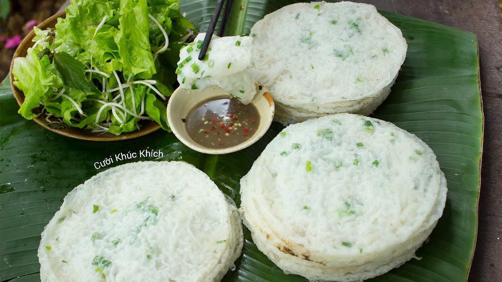

Ẩm thực Bình Định mang đậm dấu ấn của vùng đất duyên hải miền Trung, nơi giao thoa giữa biển cả và đồng bằng. Các món ăn nơi đây không quá cầu kỳ trong cách chế biến nhưng lại đậm đà hương vị, mộc mạc mà tinh tế, phản ánh rõ nét tính cách chân chất, giản dị của con người Bình Định.
Một trong những nét đặc trưng nổi bật của ẩm thực Bình Định là sự hài hòa giữa vị mặn, ngọt và cay nhẹ. Người Bình Định thường sử dụng nguyên liệu tươi ngon, sẵn có tại địa phương như hải sản biển, gạo, rau xanh và các loại gia vị dân dã. Chính điều đó đã tạo nên những món ăn tuy đơn giản nhưng khó quên đối với thực khách.
Nhắc đến Bình Định, không thể không kể đến bánh xèo tôm nhảy, món ăn nổi tiếng với lớp bánh mỏng, giòn rụm, nhân tôm tươi vừa bắt lên còn giữ nguyên vị ngọt tự nhiên. Bánh được ăn kèm rau sống và nước chấm đặc trưng, tạo nên sự hòa quyện hấp dẫn giữa các hương vị.

Bên cạnh đó, bún chả cá Quy Nhơn cũng là món ăn tiêu biểu, thể hiện rõ nét văn hóa ẩm thực vùng biển. Nước dùng thanh ngọt, chả cá dai thơm làm từ cá tươi, kết hợp cùng sợi bún mềm, mang đến cảm giác vừa dân dã vừa đậm đà bản sắc địa phương.
Ngoài ra, Bình Định còn nổi tiếng với nhiều loại bánh truyền thống như bánh ít lá gai, bánh hồng Tam Quan, bánh tráng nước dừa, bánh tráng mè. Những món bánh này không chỉ xuất hiện trong bữa ăn hằng ngày mà còn gắn liền với các dịp lễ, Tết và sinh hoạt văn hóa của người dân, thể hiện sự khéo léo và tinh tế trong ẩm thực dân gian.
Ẩm thực Bình Định không chỉ là sự thưởng thức hương vị mà còn là sự cảm nhận về văn hóa và con người nơi đây. Mỗi món ăn đều mang trong mình câu chuyện về vùng đất, về cuộc sống lao động cần cù và tấm lòng hiếu khách của người Bình Định, để lại ấn tượng sâu sắc trong lòng du khách khi có dịp ghé thăm.